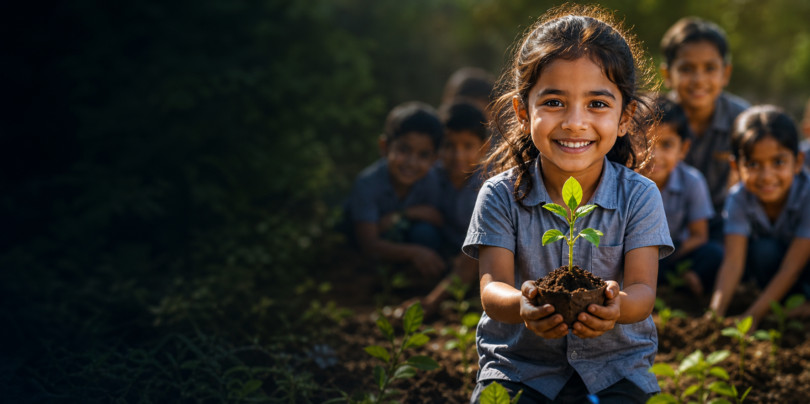

Our Mission
Empower communities and create lasting positive change.
A nonprofit dedicated to creating sustainable change in communities.
We work alongside local leaders to expand education, healthcare, clean water, environmental protection, and economic opportunity. Every program is designed for measurable impact and long-term community ownership.
Empower communities and create lasting positive change.
A world where everyone has the opportunity to thrive.
Compassion, integrity, transparency, and accountability.
